HIST 270 · History of China · Chapter 3 · Lecture 3
Han Society, Thought, the Southern Reach, and Late-Han Strains
Han China, 206 BCE–220 CE · Ideas and History · People, Families, and Status · Empire Moves South · The Han System Under Strain Background essay ↗
Course title card (sage, figurines, coin, bamboo books, caravan, burning city). A designed graphic, not a historical source.
Start here · How to study this deck on your own
Five Parts, Self-Checks, and an Open Study Buddy Button Guide You Through This Deck
Click Open Study Buddy (lower right) or press N for each slide's Study Buddy notes.
Work through five parts; each ends with a self-check.
Reading Guide checkpoints: Q7, Q8, Q9, Q10; Q12 is in the Pierian Spring.
Click a teal dotted word for a definition; the Pierian Spring is required study.
Arrow keys move; Esc shows a slide map. All due dates are on Canvas.
×
Han
Han (hahn): the dynasty that ruled China from 206 BCE to 220 CE, broken only by Wang Mang’s Xin dynasty (9–23 CE). When the Han was restored, the capital moved from Chang’an (Cháng’ān) to Luoyang (Luòyáng), so historians speak of the Western or Former Han and the Eastern or Later Han (p. 44). Popups like this one close with Esc, the × mark, or a click outside the card.
Roadmap · From ideas to society to the southern frontier
Where We’re Going Today
How did Han people explain Heaven, humanity, and the emperor?
Why did Sima Qian change how Chinese history was written?
How did status, family, and farming shape Han society?
How far did Han power reach, by armies, migrants, and gifts?
Why was the Later Han system becoming harder to control?
Larger question: What kind of society grew inside the Han imperial system, and why did that system become vulnerable?
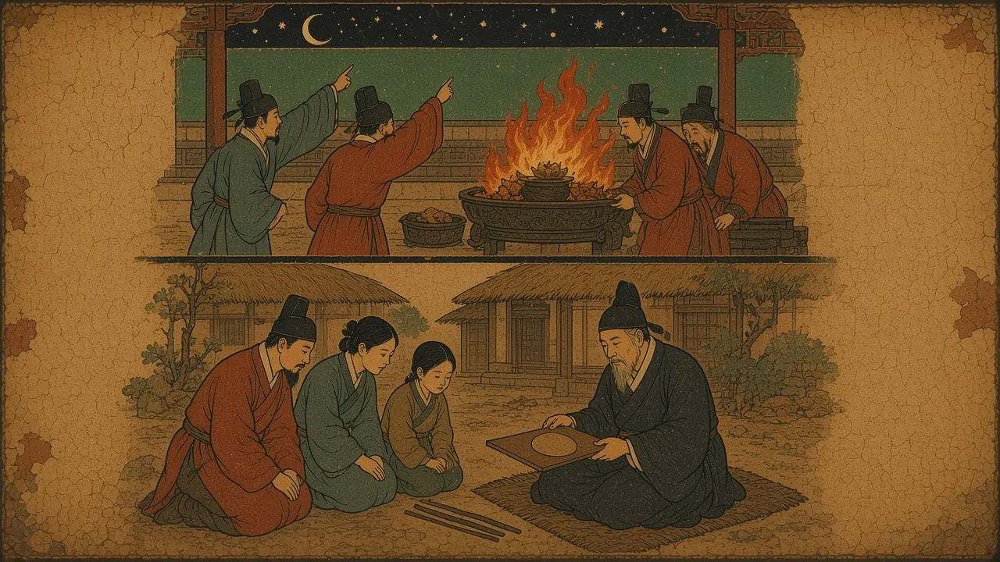
Segment 1 of 5 · Part 1
Many Ways to Explain the World
Han intellectual life was a synthesis, not a single orthodoxy: Q7
On a palace terrace at night, court astronomers point to the stars while ritual specialists burn offerings; below, a farming family kneels before a diviner with a divining board and counting sticks. AI-generated interpretation in Han tomb-mural style, not a historical record.
Part 1 · Han thought · a synthesis
Many Ways to Explain the World
Court and politics
Confucian classics · Imperial rituals
Cosmology
Yin and yang · Five Phases
Popular religion
Spirits and omens · Immortality traditions
Han intellectual life was a mixture of traditions and practices.
Part 1 · Religion at court and in the village
Han Religion Was Not Simply Confucian
Huang-Lao linked traditions surrounding Laozi and the Yellow Emperor.
Emperor Wu pursued rituals, immortality, omens, and supernatural powers.
Court ritualists connected cosmic forces to imperial government.
Popular religion included spirits, divination, omens, and local practices.
Confucian learning became important to government without replacing the wider religious world of Han China.
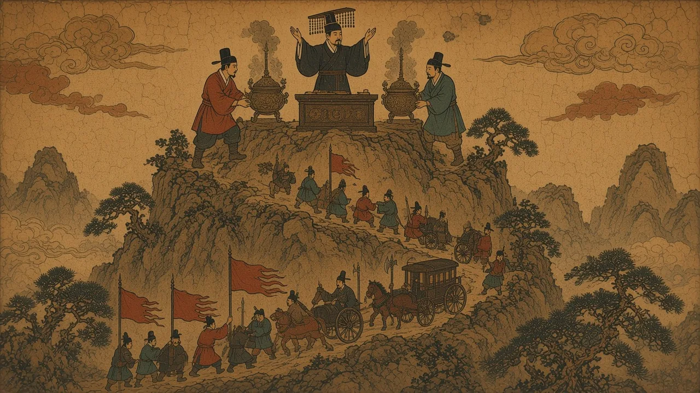
On the peak of Mount Tai (Tàishān), a Han emperor offers a sacrifice to Heaven before an altar, while ritual specialists burn incense and a long procession winds up the mountain. AI-generated interpretation in Han tomb-mural style, not a historical record.
×
Huang-Lao
Huang-Lao (Huáng-Lǎo) Daoism: Huang, “yellow,” refers to the Yellow Emperor and Lao to Laozi. Early in the Han both were treated as deities of vast powers (p. 45).
Q7 concept · Portent
Concept: A Portent Is Nature Sending a Message
Portent
A natural event, such as a flood or an earthquake, read as a warning from Heaven to the ruler.
A Han emperor at the chalkboard. Course cartoon, AI-generated in the style of Professor Austin’s chalkboard cartoon; not a portrait or historical source.
Part 1 · Han cosmology · 2nd century BCE
Heaven, Earth, Humanity, and the Emperor
Yin and yang described complementary forces
The Five Phases described cycles of change
Nature, government, and behavior could reflect one another
Some thinkers read disasters as warnings about imperial government
The emperor had a special responsibility to keep government in harmony with Heaven and Earth.
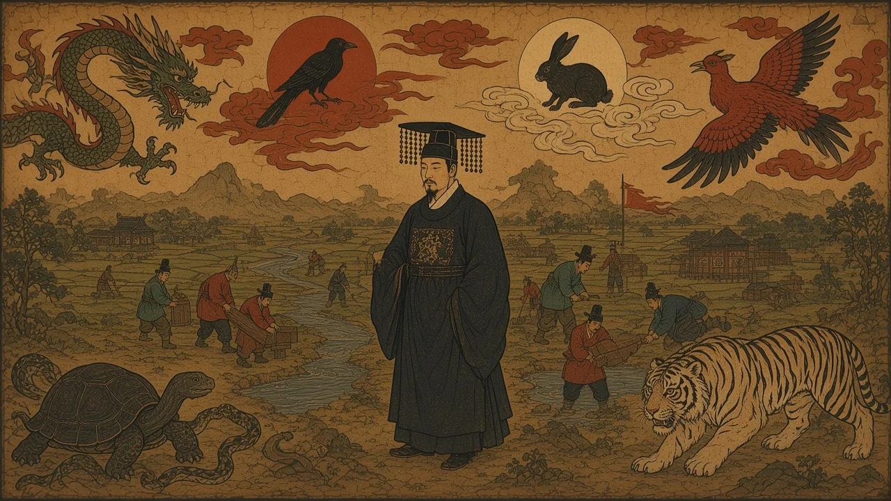
A Han emperor stands at the center of a painted cosmos: sun and moon above, fields and rivers below, and around him a green dragon, a red bird, a white tiger, and a black tortoise marking the directions. AI-generated interpretation in Han tomb-mural style, not a historical record.
×
Five Phases
Five Phases (wǔxíng): fire, water, earth, metal, and wood, forces that flow in cycles. Each was linked to a season, a direction, a color, an emotion, and a part of the body; your textbook prints the full table of correspondences (pp. 45, 47).
Part 1 · Q7 story · Dong Zhongshu · about 195–105 BCE
Dong Zhongshu Made the Ruler the Pivot Linking Heaven, Earth, and Humanity
The leading Han Confucian scholar advised Emperor Wu
He urged honoring only the Six Disciplines and Confucius
He blended Confucian, Daoist, and Legalist ideas
He called the ruler the “pivot of all living things”
Officials were soon chosen for Confucian virtue and trained in the Confucian classics at a national university.
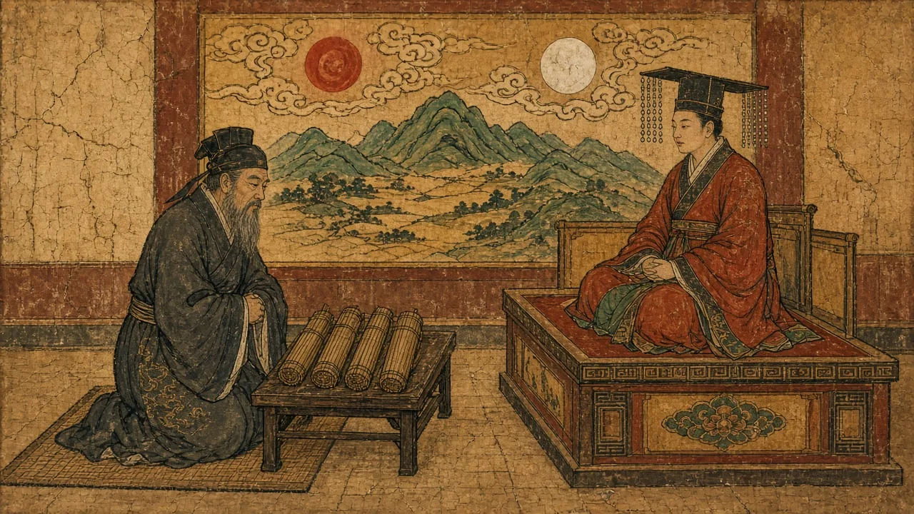
In a palace hall, a gray-bearded Confucian scholar, imagined as Dong Zhongshu (Dǒng Zhòngshū), kneels to advise a young emperor beside a stand of bamboo-strip books, beneath a wall painting of sun, moon, mountains, and fields. AI-generated interpretation in Han tomb-mural style, not a historical record.
×
The Five Classics
Ancient books recovered after the Qin burnings and treated by Han scholars as classics, works holding the wisdom of the past. Your textbook lists five: the Book of Changes, the Book of Documents, the Book of Poetry, the Spring and Autumn Annals, and the Book of Rites. Han scholars wrote commentaries explaining their archaic words (p. 45).
Part 1 · A skeptic · 27–ca. 100 CE
Not Everyone Believed It
Wang Chong (27–ca. 100 CE) criticized popular explanations
Questioned ghosts, immortality, omens, and lucky days
Asked whether disasters could be blamed on choosing an inauspicious moment
Used ordinary evidence and logical criticism against superstition
Han thinkers disagreed about how the universe worked.
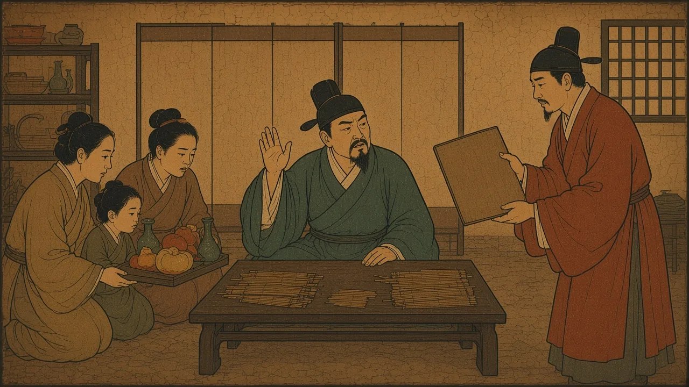
At his writing table, a Han scholar, imagined as Wang Chong (Wáng Chōng), waves away a diviner with a divining board, while a worried family holding offerings waits to hear whether the day is lucky. AI-generated interpretation in Han tomb-mural style, not a historical record.
Part 1 · Book culture · end of the Han
Book Culture Was Changing Too
By the end of the Han, improved paper made written texts easier to produce, store, and handle than books made from bamboo or wooden strips.
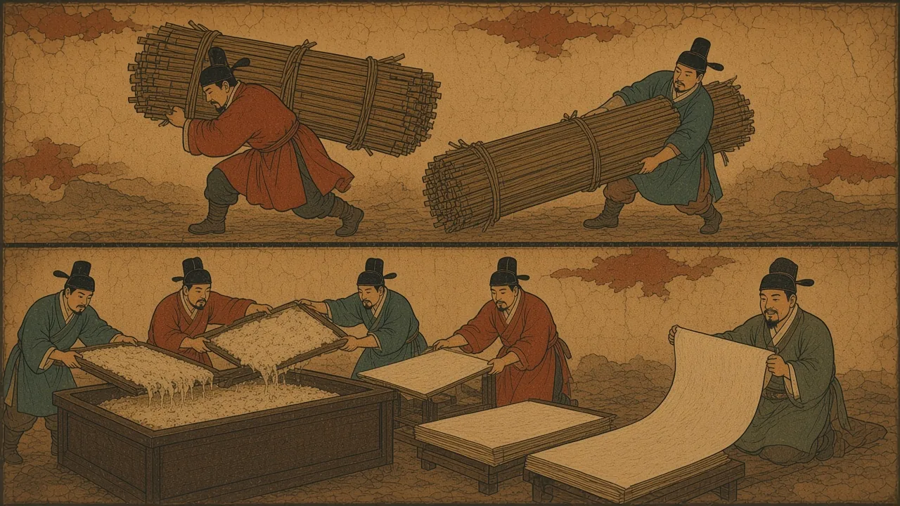
In one register, a scribe struggles to carry heavy bundles of bamboo strips tied with cord; in the next, workers lift wet plant fiber on screens and a scribe unrolls a light paper scroll. AI-generated interpretation in Han tomb-mural style, not a historical record.
Self-check · Segment 1 · not graded
Check Yourself: Many Ways to Explain the World
Answer each question from memory, out loud or on paper, then click Show answer. Nothing here is graded or recorded.
1. What two figures did Huang-Lao Daoism treat as deities?
The Yellow Emperor and Laozi (p. 45).
2. In Han cosmology, how could a flood or an earthquake be read?
As a portent: a sign that the emperor had failed to keep heaven and earth in balance (p. 45).
3. Why was the emperor uniquely important in this cosmology?
He alone could link the realms of heaven, earth, and humanity (p. 47).
4. What kinds of beliefs did Wang Chong criticize?
Ghosts, immortality, omens, and lucky or unlucky days, using ordinary evidence and logic (p. 46).
5. How did books change by the end of the Han?
Paper with a good writing surface made books lighter and easier to handle than bamboo or wooden strips (p. 45).
How did cosmological theories and religious beliefs evolve during the Han Dynasty to explain the relationship between the emperor, humanity, and the cosmos?
Use the evidence from Part 1: the many traditions at court and in the village, the cosmology that linked Heaven, Earth, humanity, and the emperor, and the critics who disagreed.
How did Han historians turn memory into evidence? Q8
A Han historian with a servant and a pack mule visits an ancient battlefield, where an old farmer points out ruined walls while the historian records notes on bamboo strips. AI-generated interpretation in Han tomb-mural style, not a historical record.
Part 2 · A family project · about 100 BCE
Sima Tan, Sima Qian, and a History of China
Sima Tan began a comprehensive history; Sima Qian continued it
The Records of the Grand Historian used annals, tables, treatises, houses, and biographies
It included officials, generals, thinkers, merchants, rebels, and foreign peoples
Sima Qian investigated success, failure, rise, fall, and change across time
History became an investigation of why people, states, and dynasties rise and fall.
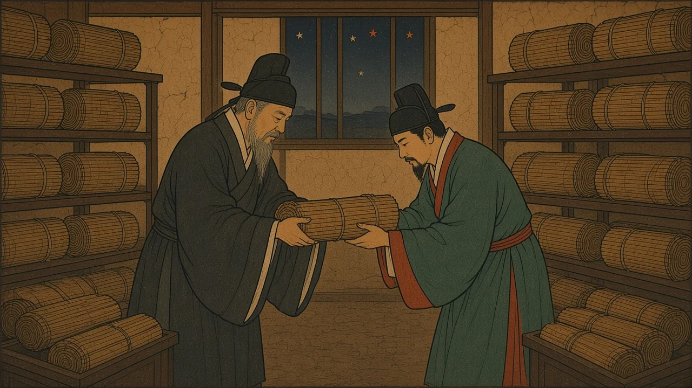
In a Han archive lined with bundled bamboo books, an elderly court astronomer, Sima Tan (Sīmǎ Tán), hands a bundle of records to his son Sima Qian (Sīmǎ Qiān). AI-generated interpretation in Han tomb-mural style, not a historical record.
×
Records of the Grand Historian
Records of the Grand Historian (Shǐjì): Sima Qian’s 130-chapter history of China from the Yellow Emperor to his own day, finished after about ten years of work (p. 47).
Part 2 · Method and motive
How Sima Qian Investigated the Past
Compared documents, archives, artifacts, and competing accounts
Visited historical sites and questioned people
Examined causes, not only dates
Defended a surrendered general, endured castration, and survived to finish the work
Evidence, breadth, and comparison made historical change explainable.
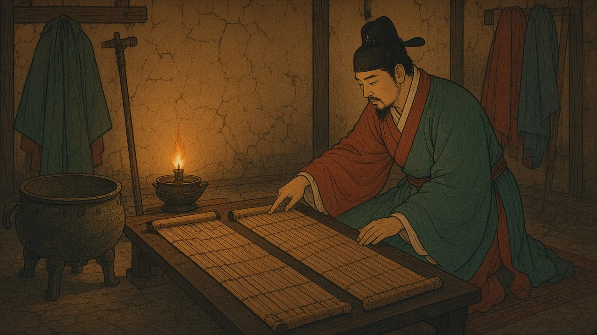
By lamplight, a Han historian compares two unrolled bamboo-strip documents beside an ancient bronze cauldron, his travel cloak and walking staff behind him. AI-generated interpretation in Han tomb-mural style, not a historical record.
Self-check · Segment 2 · not graded
Check Yourself: Investigating the Past
Answer each question from memory, out loud or on paper, then click Show answer. Nothing here is graded or recorded.
1. Who began the comprehensive history, and who completed it?
Sima Tan, court astronomer under Emperor Wu, began it; his son Sima Qian completed it (p. 47).
2. Name three of the five kinds of chapters in the Records.
Annals (political narrative), tables, treatises, chapters on ruling houses, and biographies (pp. 47–48).
3. Name two ways Sima Qian gathered evidence.
He examined documents and artifacts, visited historical sites, and questioned people (p. 47).
4. Why did he accept castration instead of suicide?
So that he could finish the history; completing it was the only way to make up for his dishonor (p. 47).
5. How does Sima Qian show that Han intellectual life was not simply obedience to imperial authority?
He did not flatter rulers: he recorded Emperor Wu’s arbitrariness and policy errors and drew attention to people whose merit went unrecognized (p. 48).
What methodological and literary innovations did Sima Qian introduce in his Records of the Grand Historian, and what were his primary motivations for completing this massive work?
What did imperial stability mean for ordinary Han society? Q9 and Q10
A Han village in horizontal registers: farmers plow with a pair of oxen, women weave at a loom in a courtyard, and a landlord watches from the gate of a walled house. AI-generated interpretation in Han tomb-mural style, not a historical record.
Part 3 · Common farmers
Most Han People Were Farmers
Villages ranged from dozens to hundreds of households
Households owed about one month of labor service each year
Men faced military obligations during much of the Han
Low taxes, famine relief, and migration assistance aimed to preserve productive households
The state depended on independent farmers, but debt and land loss threatened that independence.
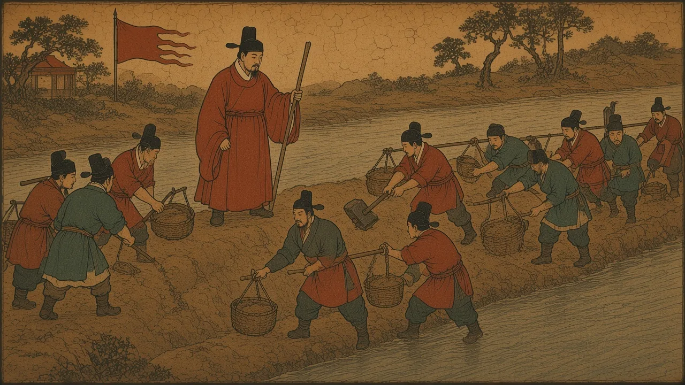
Villagers carry baskets of earth to repair a river dike during their month of labor service, while a county official with a tally stick counts the workers. AI-generated interpretation in Han tomb-mural style, not a historical record.
Part 3 · Peace and population · census of 2 CE
Peace, Productivity, and Population
Improved plows, irrigation, and grain-processing tools supported cultivation
Population growth depended on agriculture as well as political stability
59 million in the census of 2 CE indicates the scale of the registered population
A census is evidence of administrative reach, not a perfect count of everyone
Agriculture made imperial scale possible.
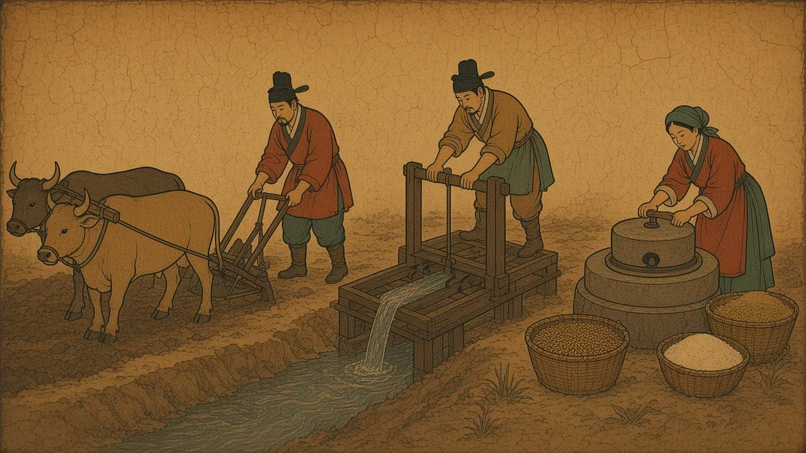
Two oxen pull a Han plow guided by a farmer, while nearby a worker pumps water with a treadle pump and a woman grinds grain with a stone hand mill. AI-generated interpretation in Han tomb-mural style, not a historical record.
Part 3 · Elite groups · Western and Eastern Han
Hierarchy Changed, but It Did Not Disappear
The old Zhou aristocracy disappeared, but family background remained powerful
Land, wealth, education, office, marriage, and political access overlapped
Merchants and manufacturers could become very wealthy
Debt, purchase, privilege, intimidation, and family ties contributed to land concentration
Powerful local families were precursors to later scholar-landowning elites.
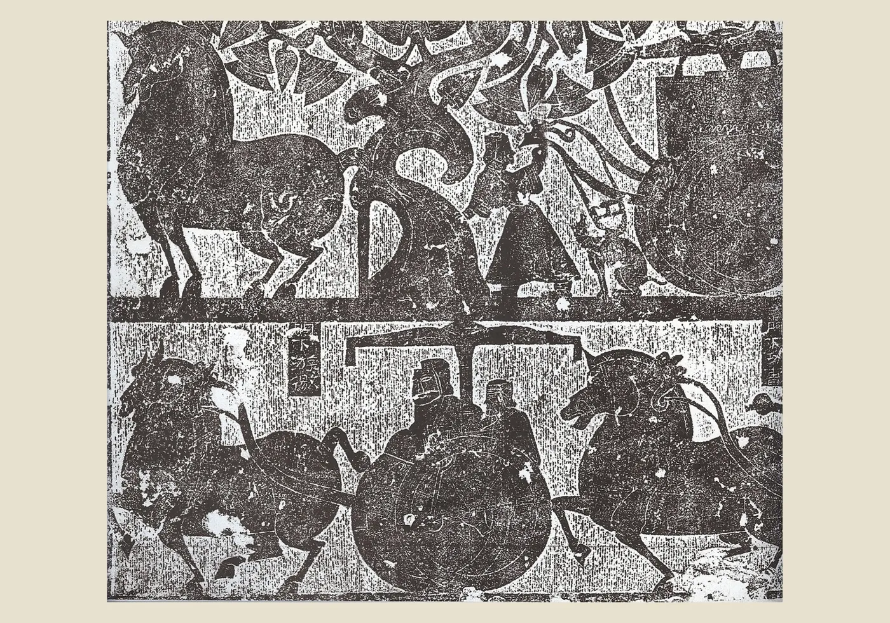
Chariots and horsemen of a wealthy family, ink rubbing of a stone relief from the Wu Family Shrines (Wǔ), Jiaxiang, Shandong, 2nd century CE. Public domain, via Wikimedia Commons.
Part 3 · The Han family
How Did Hierarchy Operate Inside the Household?
The senior male usually headed the family; a widow could lead when sons were minors
Family members carried legal responsibilities toward one another
Property was generally divided among sons; daughters usually received dowries
Marriages were arranged by family heads; brides usually joined the husband’s family
Filial piety linked household duties to wider social order.
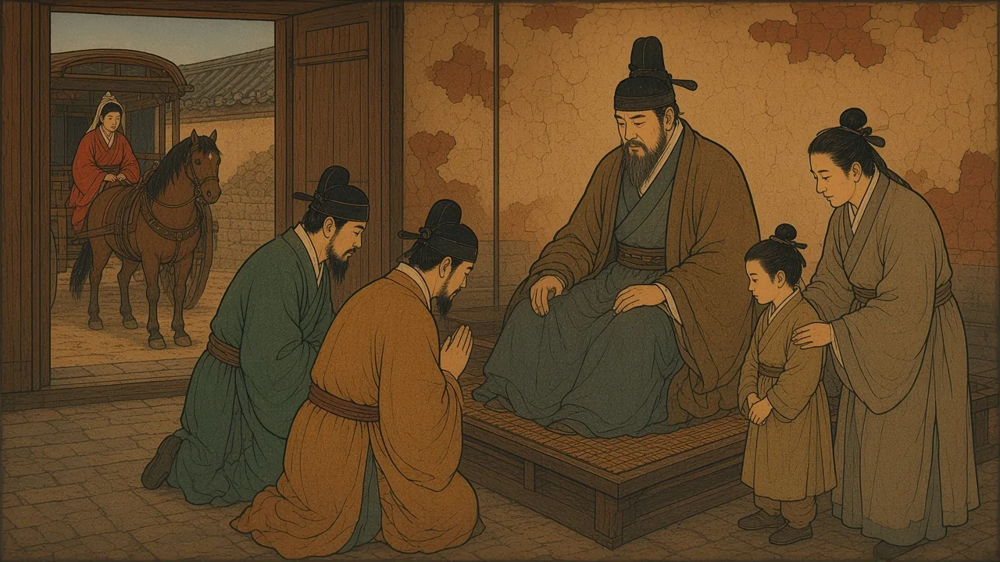
In a Han household courtyard, a gray-haired family head sits on a raised mat while his grown sons kneel before him, a widow guides her young son, and a bride arrives by carriage from another family. AI-generated interpretation in Han tomb-mural style, not a historical record.
Q10 concept · Filial piety
Concept: Filial Piety Starts at Home and Reaches the Throne
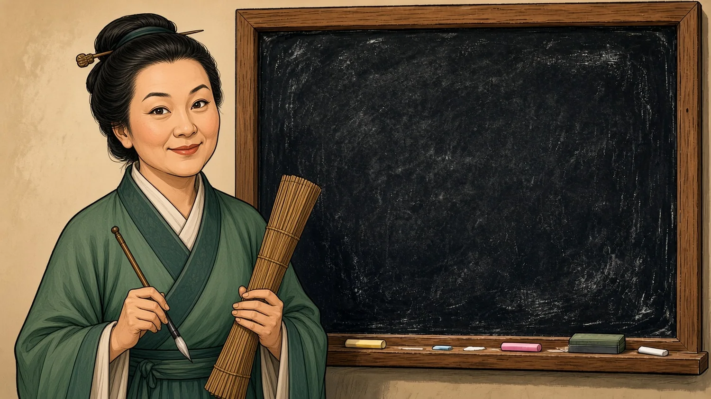
Filial piety
The duty of children to respect, obey, and care for their parents and ancestors.
Ban Zhao (Bān Zhāo) at the chalkboard. Course cartoon, AI-generated in the style of Professor Austin’s chalkboard cartoon; not a portrait or historical source.
Part 3 · From household to empire
Filial Responsibility and Social Order
filial responsibility at home → responsible behavior in society → political order
The Classic of Filial Piety presented family conduct as moral training
Respect, care, and duty were supposed to extend beyond the household
Elite texts prescribed ideals; actual families did not always follow them
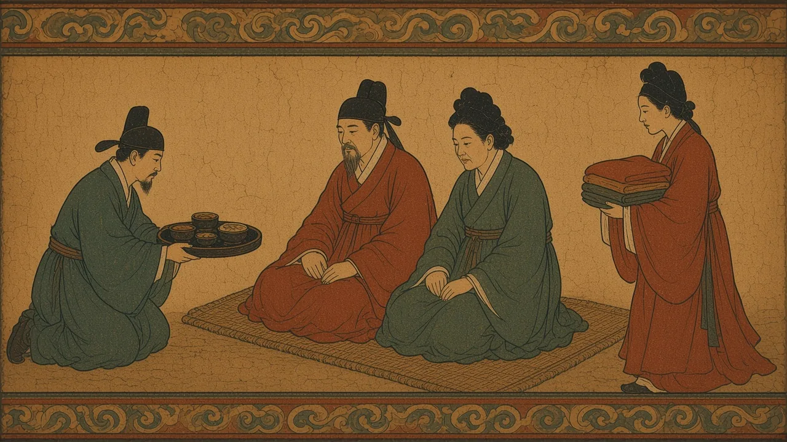
A grown son kneels to serve food to his elderly parents while his wife brings them warm robes, in the style of the famous filial-son scenes painted on Han tomb walls. AI-generated interpretation in Han tomb-mural style, not a historical record.
Part 3 · Biography: The Ban family · 1st–2nd century CE
The Ban Family: History, Education, and Power
Ban Biao began a history of the Western Han
Ban Gu continued it; Ban Zhao helped complete it
Ban Zhao taught at court and advised Empress Deng
She advocated girls’ education while defending hierarchical gender roles in Admonitions for Women
Ban Zhao’s life connects family, education, historical writing, and political access.
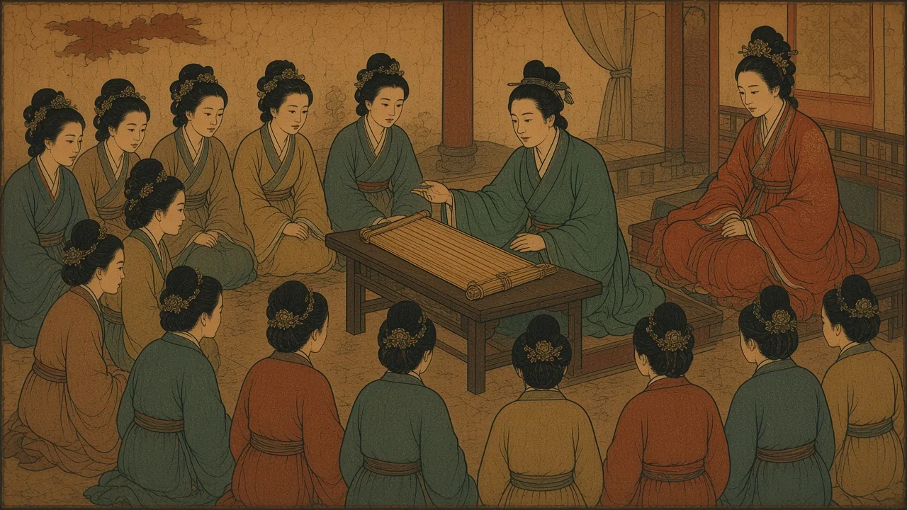
In a palace hall, the scholar Ban Zhao (Bān Zhāo) teaches a group of palace women from a bamboo-strip book, while a young empress listens from a raised seat. AI-generated interpretation in Han tomb-mural style, not a historical record.
Self-check · Segment 3 · not graded
Check Yourself: People, Families, and Status
Answer each question from memory, out loud or on paper, then click Show answer. Nothing here is graded or recorded.
1. How did the Han state try to keep farmers independent, and why did many still lose land?
Low land taxes, famine relief, and help for migrants; debt still forced many to sell land and become tenants (p. 50).
2. Name three routes to wealth or power for Han elites.
Proximity to the throne, merchant wealth, office through education and recommendation, and landholding (pp. 50–51).
3. Who usually headed a Han family, and how was property divided?
The senior male (a widow until sons came of age); land was divided among all sons, and daughters received dowries (p. 51).
4. What did the Classic of Filial Piety argue?
That sincere filial devotion at every level of society leads people to perform their duties, creating peace and harmony (p. 51).
5. What tension does Ban Zhao’s life show?
She advocated education for girls while defending hierarchical gender roles and womanly humility (pp. 49, 52).
Describe the evolution of the social hierarchy during the Han Dynasty. How did wealth, landownership, and political access define the new elite classes after the eradication of the Zhou nobility?
Use the evidence from Part 3: what happened to farmers who fell into debt, and the different groups who outranked them in wealth, land, and access to office.
Discuss the structure of the Chinese family during the Han period. How did foundational texts like the Classic of Filial Piety and Ban Zhao’s Admonitions for Women shape social and gender roles?
Use the evidence from Part 3: how authority, law, inheritance, and marriage worked inside the family, and what the Classic of Filial Piety and Ban Zhao taught.
How far did Han power reach, and how did armies, migrants, and gifts carry it?
Families of Han migrants pole loaded boats and lead oxcarts south along a river valley, past rice paddies, green hills, and villages of raised wooden houses. AI-generated interpretation in Han tomb-mural style, not a historical record.
Part 4 · The reach of Han power · about 100 BCE
How Far Han Power Reached
Emperor Wu set up military districts in northern Korea
Han armies conquered Dian (modern Yunnan) in 109 BCE
Emperor Wu’s armies conquered Nam Viet in 111 BCE
Millions of migrants moved south into the Yangzi Valley and beyond
Beyond its old borders, Han claimed overlordship: rule from outside over peoples who kept some of their own ways.
Course map: Han expansion about 100 BCE. Chang’an (Cháng’ān) was the capital; Dian (Diān) and Nam Viet (Nányuè in Chinese) were conquered by Emperor Wu’s armies. Drawn for this course from Natural Earth data; borders approximate.
Part 4 · Diplomacy · the Han system of gifts
Tribute Diplomacy: Envoys Brought Gifts, and the Emperor Gave More Back
States and tribes beyond the borders sent envoys bearing gifts
The emperor answered with even more lavish gifts
Gifts may have cost 10 percent of state revenue
In 25 BCE: 20,000 rolls of silk cloth went to tributary states
Costly, but cheaper than war, and proof to the court that Han was the center of the civilized world.
Foreign envoys, a steppe envoy in a fur hat with a horse, one carrying a chest, and one carrying a drum, present gifts to the seated Han emperor, while Han officials load carts with far larger return gifts of rolled silk and silk floss. AI-generated interpretation in Han tomb-mural style, not a historical record.
Self-check · Segment 4 · not graded
Check Yourself: How Far Han Power Reached
Answer each question from memory, out loud or on paper, then click Show answer. Nothing here is graded or recorded.
1. What did Emperor Wu set up in northern Korea, and why?
Military districts, to flank the Xiongnu on their eastern border (p. 53).
2. What happened to Dian in 109 BCE, and afterward?
Emperor Wu conquered it and made it a tributary state; it rebelled repeatedly, and the Han reestablished its overlordship each time (pp. 53–54).
3. In the south, who often reached a new region first?
Migrants looking for land, moving south along the rivers; the government followed with garrisons and counties (p. 53).
4. How did tribute diplomacy work, and why was it worth the cost?
Envoys brought gifts and the emperor gave back more; it reduced defense costs and confirmed Han as the center of the civilized world (p. 55).
Chapter 3 explains why the dynasty became vulnerable before Chapter 4 explains how it broke apart.
A great Han palace at dusk: inside its walls, rival groups of officials, women of the empress’s family, and palace attendants gather in separate courtyards while storm clouds build overhead. AI-generated interpretation in Han tomb-mural style, not a historical record.
Part 5 · The succession problem
Child Emperors Made Regency Politics Dangerous
Han emperors inherited the throne
Some heirs became emperor while still children
A child emperor required adults to govern for him
Empress dowagers and their relatives could gain enormous influence
A succession system designed for continuity could create a struggle over who actually controlled the emperor.
Part 5 · Wang Mang · to 9 CE
Wang Mang Rose Through the Imperial Family
Wang Mang belonged to the powerful family of Empress Wang
He served as regent for two young emperors
His position gave him extraordinary authority at court
In 9 CE, he replaced the Han with his Xin Dynasty
Wang Mang began as a regent within the Han system before becoming emperor himself.
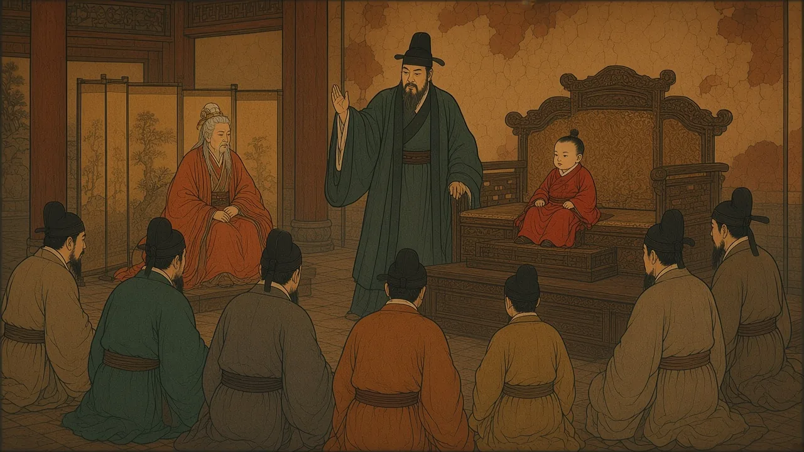
A stern regent in scholar’s robes, imagined as Wang Mang (Wáng Mǎng), stands beside an infant emperor on the throne and addresses kneeling officials, while an elderly grand empress dowager watches from beside a screen. AI-generated interpretation in Han tomb-mural style, not a historical record.
Part 5 · The Xin dynasty · 9–23 CE
Wang Mang Tried to Restore an Ideal Social Order
Wang Mang was a learned Confucian scholar
He limited large private landholdings
He outlawed slavery and revived public granaries
He expanded government control of parts of the economy
Wang Mang believed classical ideals could be used to repair social and political problems.
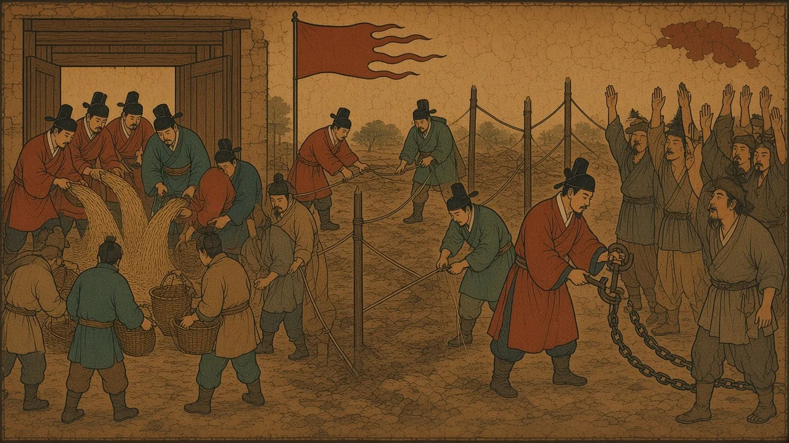
Officials of a new dynasty open a public granary to hungry farmers, measure field boundaries with ropes, and unchain a line of freed slaves. AI-generated interpretation in Han tomb-mural style, not a historical record.
Part 5 · The fall of the Xin · 9–23 CE
Economic Disruption and Disaster Destroyed the Xin Dynasty
Currency and economic policies produced disruption
The Yellow River changed course and caused catastrophic flooding
Millions of farmers were displaced and rebellion spread
A Han imperial clansman restored the dynasty
9–23 CEXin Dynasty
After 23 CEHan restored; capital moves to Luoyang
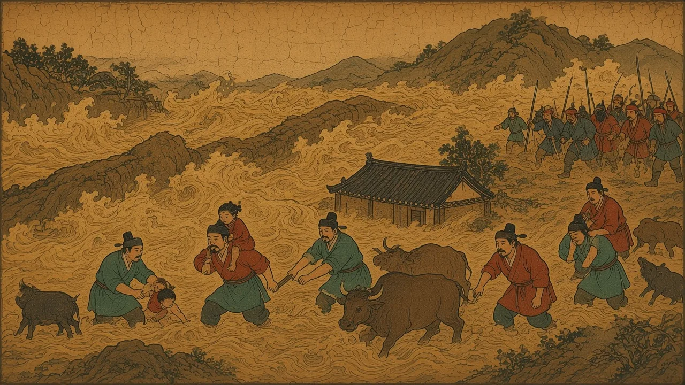
The Yellow River bursts through its dikes; farmers flee across flooded fields with children and livestock, while armed rebels gather on a distant hill. AI-generated interpretation in Han tomb-mural style, not a historical record.
Part 5 · The Later Han · after the Xin (9–23 CE)
Restoring the Han Did Not Fix the Succession Problem
The throne still passed by hereditary succession
Young emperors could still require regents
Empress families could still dominate a regency
Control of the emperor remained a path to political power
The dynasty returned, but the political structure that had helped Wang Mang rise remained intact.
Part 5 · Palace eunuchs
Palace Eunuchs Had Something Other Officials Did Not: Access
Eunuchs served inside the imperial palace
They had unusually close access to emperors
Confucian officials generally looked down on them
Emperors could view them as trustworthy palace servants
Eunuch influence began with proximity to the emperor.
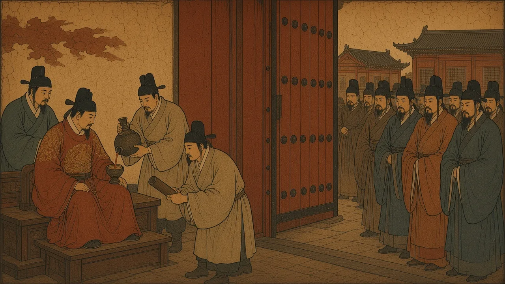
Inside the palace’s inner gate, eunuch attendants serve the emperor wine and bring him a message, while officials in tall caps wait outside the gate. AI-generated interpretation in Han tomb-mural style, not a historical record.
Part 5 · Eunuch power · 124–159 CE
Eunuchs Became a Political Power Inside the Palace
Eunuchs gradually built networks of influence
In 124 CE, eunuchs helped place a child emperor on the throne
In 159 CE, an emperor used eunuchs against a consort-family faction
Their victory increased their influence over court politics
A group valued because it supposedly lacked an outside power base developed a power base inside the palace.
Part 5 · Protest at court · 166–169 CE
Officials Challenged Eunuch Control of the Court
Confucian officials believed advising rulers was part of their duty
Many regarded eunuch influence as harmful to government
Officials protested eunuch power in 166 and 169 CE
The eunuchs retaliated against their opponents
A palace rivalry had become a conflict between the court and members of the educated political elite.
Q9 concept · Shi, the educated elite
Concept: The Shi Were the Educated Elite
Shi
The educated elite: men whose learning and reputation gave them honor, whether or not they held office.
Confucius (Kǒngzǐ) at the chalkboard. Course cartoon, AI-generated in the style of Professor Austin’s chalkboard cartoon; not a portrait or historical source.
Part 5 · The purges · 166–184 CE
The Purges Pushed Educated Men Out of Government
Critics were imprisoned and barred from office
More than one hundred reportedly died in prison
Persecution continued from 166 to 184
Excluded shi still retained prestige and political connections
The government was alienating educated men whose cooperation had helped the Han bureaucracy function.
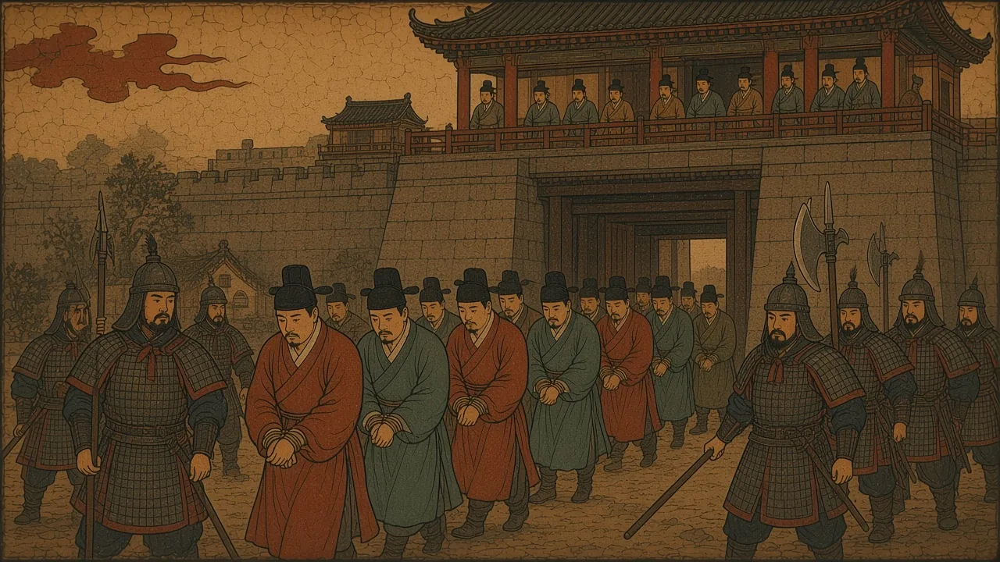
Guards lead officials in scholars’ caps, hands bound, through a palace gate toward a prison, while eunuchs watch from a balcony above. AI-generated interpretation in Han tomb-mural style, not a historical record.
Part 5 · Local society · Eastern Han
Powerful Families Were Becoming Stronger in Local Society
Debt could force farmers to sell land or become dependent
Wealthy families accumulated property and retainers
Education and recommendation helped elite families enter office
Local influence could rest on family networks as well as government position
Political influence was not confined to the imperial court.
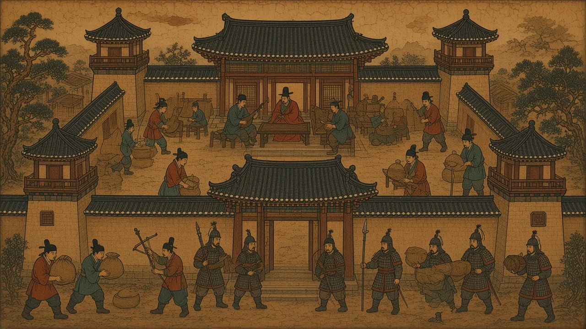
A walled Han manor with corner watchtowers: the landlord feasts in the main hall while tenant farmers deliver grain and armed retainers guard the gate. AI-generated interpretation in Han tomb-mural style, not a historical record.
Part 5 · Synthesis · late 2nd century CE
By the Late Second Century, the Han Had Several Vulnerabilities
Court
Regencies encouraged struggles among palace factions
Officials
Eunuch purges alienated educated elites
Local society
Powerful families gained wealth and influence
Military
Maintaining the empire required specialized forces
None of these problems alone destroyed the Han. Together, they made the dynasty increasingly difficult for the central court to control.
Today's lecture ends here. Continue on your own: the stories below finish this chapter's history, and each ends with a review question to answer.
"A little learning is a dang'rous thing; Drink deep, or taste not the Pierian spring."Alexander Pope, An Essay on Criticism, 1711
Independent study · Q12 story · Armies and migrants
Empire Moved South in Two Ways
Armies and officials imposed conquest and administration
Migrants and merchants moved along river valleys
Counties, roads, schools, and waterways extended Han institutions
Local societies adopted, adapted, negotiated, and resisted
Expansion was demographic and cultural as well as military.
Independent study · Q12 concept · Overlordship
Concept: Overlordship Is Rule From Outside
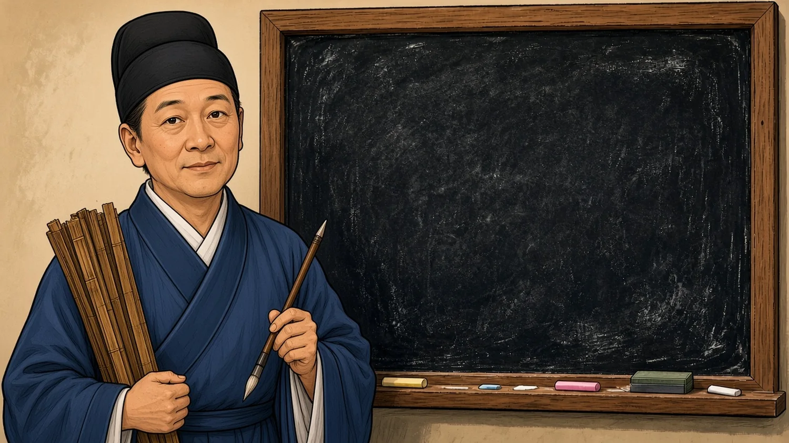
Overlordship
Rule by an outside power that claims authority over a people, who keep some of their own leaders and ways.
Sima Qian (Sīmǎ Qiān) at the chalkboard. Course cartoon, AI-generated in the style of Professor Austin’s chalkboard cartoon; not a portrait or historical source.
Independent study · Q12 story · Nam Viet · 206–111 BCE
Nam Viet / Nanyue
After Qin collapsed, Zhao Tuo / Triệu Đà established an independent kingdom
Nam Viet included areas of modern southern China and northern Vietnam
Zhao Tuo incorporated local warriors and encouraged intermarriage
Emperor Wu’s forces conquered Nam Viet in 111 BCE
Do not project a modern Vietnamese nation-state backward.
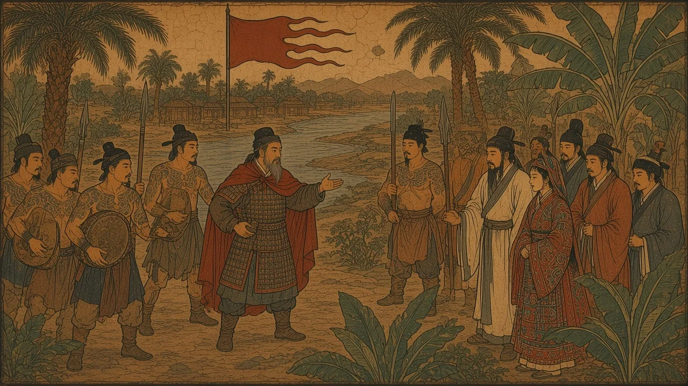
At a riverside camp among palm trees, a former Qin general, Zhao Tuo (Zhào Tuó), welcomes tattooed local warriors carrying bronze drums into his army, while a Han settler and a local bride stand together nearby. AI-generated interpretation in Han tomb-mural style, not a historical record.
×
Nam Viet / Nanyue
Nam Viet (Vietnamese) or Nanyue (Nányuè, Chinese), “Southern Yue”: the kingdom founded by Zhao Tuo (Zhào Tuó), Triệu Đà in Vietnamese. It stretched from modern Guangdong province as far south as modern Da Nang (p. 54).
Independent study · Q12 story · Resistance · 39 CE
Resistance: The Trưng Sisters, 39 CE
Local aristocratic widows organized regional chiefs and armed followers
They overwhelmed Chinese strongholds and became queens of an independent Vietnamese kingdom
Three years later, a powerful Chinese army reestablished Chinese rule
The revolt became important in later Vietnamese historical memory
Cultural exchange did not mean political acceptance.
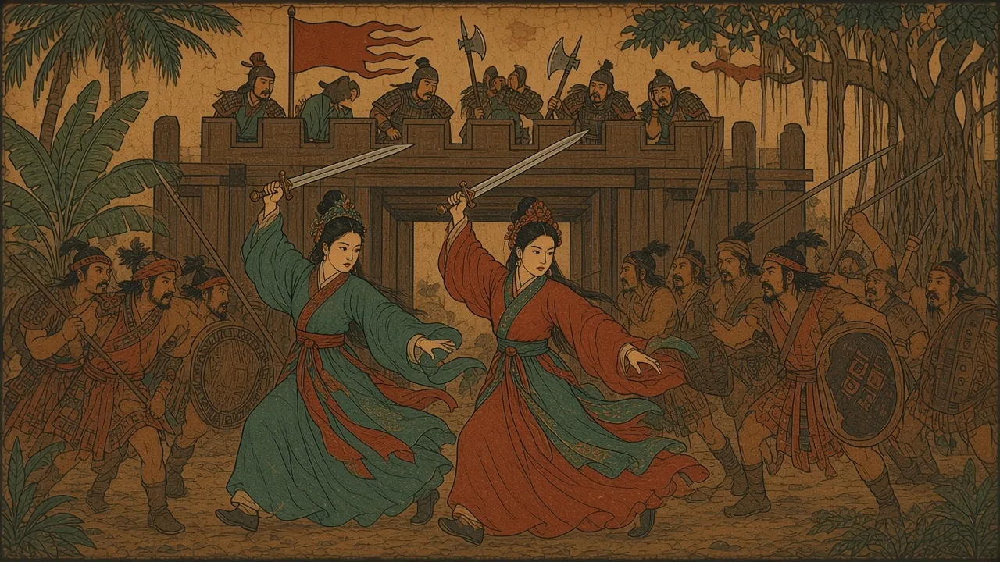
Two Vietnamese noblewomen with swords lead local chiefs and armed followers as they storm the wooden gate of a Han stronghold. AI-generated interpretation in Han tomb-mural style, not a historical record.
Independent study · Q12 story · Results
What Han Expansion Changed
Chinese-style institutions, language, schools, roads, and waterways became influential
Migration created new farming communities and mixed local elites
Local societies continued to shape how Han institutions operated
Adoption, adaptation, negotiation, and resistance all formed part of the process
Han expansion spread institutions without producing a single uniform culture.
Self-check · Pierian Spring · Q12 story · not graded
Check Yourself: Empire Moves South
Answer each question from memory, out loud or on paper, then click Show answer. Nothing here is graded or recorded.
1. What were the two engines of southern expansion?
Armies and officials, and migrants and merchants moving along the rivers (p. 53).
2. Name the three borderlands on the overview slide.
Northern Korea, Dian in modern Yunnan (conquered 109 BCE), and Nam Viet in modern northern Vietnam (pp. 53–54).
3. How did Zhao Tuo win local support in Nam Viet?
He took local warriors into his army, encouraged Chinese material culture, and supported intermarriage (p. 54).
4. What did the Trưng sisters do in 39 CE?
They led chiefs and armed followers, overwhelmed Chinese strongholds, and were proclaimed queens; Han rule returned three years later (p. 54).
5. What does it mean that the local elite became culturally dual?
They took on Chinese ways while staying local, serving as brokers between Chinese governors and the native people (p. 54).
How did Chinese migration and military expansion impact the southern region of Nam Viet (modern Vietnam), and how did the indigenous populations respond to Chinese overlordship?
Use the evidence from the reach-of-Han map and these Pierian Spring slides: how migrants and armies reached Nam Viet, what Han rule changed there, and how local people responded.
Independent study · Maintaining the empire · northern frontier
Maintaining the Han Empire Required Permanent Military Resources
Northern defenses required thousands of soldiers
Soldier-farmers were settled along the frontiers
Supplying distant garrisons was expensive
Frontier warfare encouraged a more professional military system
The empire’s size created military obligations that did not disappear when conquest ended.
Review question to answer · Q4
Evaluate the Han Dynasty’s evolving strategies for managing the nomadic Xiongnu confederation. How did diplomacy, economic tribute, and military action interact on the northern frontier?
Soldier-farmers plow fields beneath a Han watchtower on the Great Wall, while sentries scan the steppe and supply carts arrive along the wall road. AI-generated interpretation in Han tomb-mural style, not a historical record.
Independent study · Eastern Han armies · from 31 CE
Han Frontier Armies Changed During the Eastern Han
Universal military service ended in 31 CE
Frontier armies increasingly relied on professional soldiers
Forces included mercenaries, convicts, and surrendered Xiongnu
Large Southern Xiongnu communities lived within Han territory
By the Later Han, the military system looked very different from the mass conscript armies of earlier centuries.
Review question to answer · Q4
Evaluate the Han Dynasty’s evolving strategies for managing the nomadic Xiongnu confederation. How did diplomacy, economic tribute, and military action interact on the northern frontier?
A mixed Han frontier army on the march: armored Han cavalry and Xiongnu horsemen in fur hats ride together under the same banners. AI-generated interpretation in Han tomb-mural style, not a historical record.
Sources and image credits
The Stories in This Deck Rest on These Sources
Your textbook
Patricia Buckley Ebrey, A History of China, Chapter 3, “The Founding of the Bureaucratic Empire: Qin-Han China (256 B.C.E.–200 C.E.),” pp. 44–55 (“Wang Mang,” “Palace Eunuchs,” “Intellectual, Literary, and Religious Currents,” Documents: “Lucky and Unlucky Days,” Biography: “The Ban Family,” “Chinese Society in Han Times,” “Borderlands,” and “Maintaining the Empire”).
Map data
The Part 4 course map was drawn from Natural Earth public-domain coastline, river, and shaded-relief data; Han borders are approximate (compare Ebrey, Map 3.1).
Images
The title card is a course illustration carried over from the original deck. The Wu Family Shrine rubbing (2nd century CE) is a public-domain image via Wikimedia Commons. The four concept slides use course cartoons of a Han emperor, Ban Zhao, Sima Qian, and Confucius at the chalkboard, AI-generated in the style of Professor Austin’s cartoon. The Part 4 map is a course graphic. All other images are AI-generated interpretations in the Chapter 3 Han tomb-mural style; not primary-source evidence. Each caption says so.